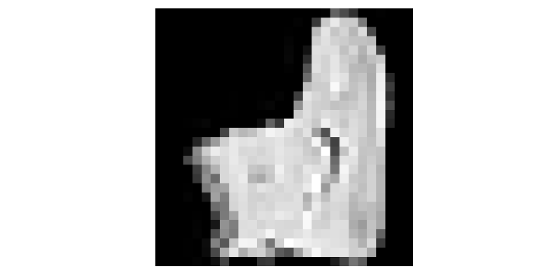
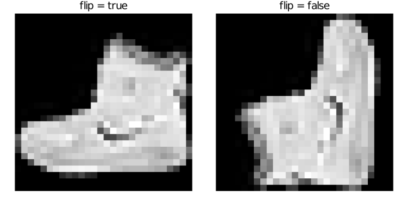
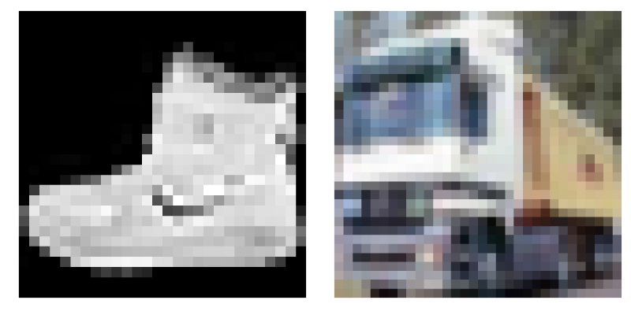
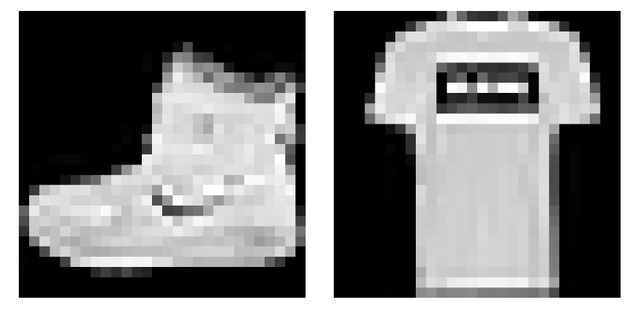

Package dependencies
In this section, we focus on package dependencies. So far, we showed how to add a specific package into environment. However, we have never taken into account the compatibility of different versions of the same package. As stated in the official Julia package manager documentation: Compatibility refers to the ability to restrict the versions of the dependencies that your project is compatible with. If the compatibility for a dependency is not given, the project is assumed to be compatible with all versions of that dependency.
Compatibility
Compatibility for a dependency can be entered in the Project.toml file manually, or using the Pkg REPL. For example, we can set compatibility for Julia itself.
(ImageInspector) pkg> compat julia 1.9It will add the following section into the Project.toml
[compat]
julia = "1.9"In the example above, we are using semantic versioning. In this case, we set, that the package is compatible with all the following versions of Julia [1.9.0 - 2.0.0). The behavior of version specification is slightly different for versions with leading zeros. For example, if we specify compatibility to 0.2.1, it means, that we support only versions [0.2.1 - 0.3.0). See the official documentation for more details.
This exercise defines the image function that converts a matrix of real numbers to a matrix of Gray points. Real numbers can be converted to Gray points by the Gray constructor from the Colors package.
Each Julia package contains its environment for tracking package dependencies. Use proper commands in the Pkg REPL to add Colors as a dependency of the ImageInspector package. Do not forget to add which versions of Colors package are supported. For the sake of the following exercises, allow versions 0.12.* and 0.13.*
Solution:
Since we want to add the image function to the ImageInspector package, we have to install the Colors package. However, we do not want to add it to examples but to ImageInspector. Printing the working directory by pwd(), we realize that we are in the correct folder and activate the working environment by activate . The dot represents the current working directory.
julia> pwd()
".../ImageInspector"
(examples) pkg> activate .
Activating environment at `/path/ImageInspector/Project.toml`Now we use add Colors to install the Colors package.
(ImageInspector) pkg> add ColorsNow we can check which version of Colors package was installed using the status command in the Pkg REPL
Project ImageInspector v0.1.0
Status `.../ImageInspector.jl/Project.toml`
⌃ [5ae59095] Colors v0.12.11
Info Packages marked with ⌃ have new versions available and may be upgradable.In this particular case, we have Colors package in version 0.12.11. To add compatibility for a dependency, we can use compat command in the Pkg REPL. To allow versions 0.12.* and 0.13.*, we can use the following command
(ImageInspector) pkg> compat Colors "0.12, 0.13"
Compat entry set:
Colors = "0.12, 0.13"
Resolve checking for compliance with the new compat rules...We can check the compat section in the Project.toml
[compat]
Colors = "0.12, 0.13"
julia = "1.9"With the Colors package installed, we have to add using Colors into the ImageInspector module. Then we can define the image function and export it.
# /src/ImageInspector.jl
module ImageInspector
using Colors
export image
image(x::AbstractMatrix{<:Real}) = Gray.(x)
endIn the previous exercise, we added the first function into our package. In the following exercise, we will test the function in our example environment.
Use the following code to test the function.
# /examples/example.jl
using ImageInspector, MLDatasets, Plots
X = MLDatasets.FashionMNIST(Float64, :train)[:][1];
x = selectdim(X, ndims(X), 1)
plot(image(x); axis = nothing, border = :none)Hint: Do not forget to add MLDatasets and Plots to the examples environment.
Solution:
First, we need to install all necessary packages. Since we want to add the packages to the examples environment, we have to change the environment again
(ImageInspector) pkg> activate ./examples
(examples) pkg>Now, we can install MLDatasets and Plots
(examples) pkg> add MLDatasets PlotsNow, with all packages installed, we can test the image function
# /examples/example.jl
using ImageInspector, MLDatasets, Plots
X = MLDatasets.FashionMNIST(Float64, :train)[:][1];
x = selectdim(X, ndims(X), 1)
plot(image(x); axis = nothing, border = :none)
Adding content
The previous exercise used the MLDatasets package that provides many well-known datasets used in machine learning. One of them is the FashionMNIST dataset of gray images of clothes. However, the resulting image is rotated 90 degrees. The reason is that images in the FashionMNIST dataset are stored in the width x height format, but the Plots package assumes the height x width format. We solve this issue by redefining the image function as follows
function image(x::AbstractMatrix{T}; flip = true) where {T <: Real}
xx = flip ? PermutedDimsArray(x, (2, 1)) : x
return Gray.(xx)
endIn the definition of image, we use PermutedDimsArray that creates a permuted view without making a copy. There is also the permutedims function that does the same but creates a copy. Now we plot both images.
# /examples/example.jl
plot(
plot(image(x; flip = true); title = "flip = true"),
plot(image(x; flip = false); title = "flip = false");
axis = nothing,
border = :none,
)
The image function also used AbstractMatrix to specify that the input must be a matrix. In general, we can specify the types of multi-dimensional input arrays in multiple ways:
AbstractArrayspecifies that the input must be an array.AbstractArray{T}specifies that the input must be an array with elements of typeT.AbstractArray{T, N}specifies that the input must be an array of dimensionNwith elements of typeT.AbstractMatrixorAbstractMatrix{T}is equivalent toAbstractArraywithN=2.AbstractVectororAbstractVector{T}is equivalent toAbstractArraywithN=1.
We will now extend the image function to three-dimensional inputs. The third dimension represents the colour channels.
Write a method for the image function that converts a 3D array of real numbers to its image representation. Assume that the third dimension represents the colour channels. Three channels should be converted to an RGB point extracting the RGB channels and RGB.(r, g, b). If the size of the third dimension is:
1the function should return a grayscale image,3the function should return a colour image,- otherwise, the function should throw an error.
Use the following code to test the image function.
# /examples/example.jl
X1 = MLDatasets.FashionMNIST(Float64, :train)[:][1];
X2 = MLDatasets.CIFAR10(Float64, :train)[:][1];
x1 = selectdim(X1, ndims(X1), 1)
x2 = selectdim(X2, ndims(X2), 1)
plot(
plot(image(x1)),
plot(image(x2));
axis = nothing,
border = :none
)Hint: use the eachslice function to split the array along the third dimension and the dropdims function to drop a dimension.
Solution:
The functionality depends on the size of the third dimension.
- If the size of the third dimension is 1, we use the
dropdimsto remove the third dimension. Then we call theimagemethod from the previous exercise. - If the dimension size is 3, we use
PermutedDimsArrayifflipis true. We can extract the three channels manually, or we can use theeachslicefunction. - Otherwise, we throw an
ArgumentError.
Altogether, the new method can be defined as follows.
# /src/ImageInspector.jl
function image(x::AbstractArray{T,3}; flip = true) where {T <: Real}
s = size(x, 3)
if s == 1
return image(dropdims(x; dims = 3); flip)
elseif s == 3
xx = flip ? PermutedDimsArray(x, (2, 1, 3)) : x
r, g, b = eachslice(xx; dims=3)
return RGB.(r, g, b)
else
throw(ArgumentError("unsupported size of the third dimension $(s) ∉ [1,3]."))
end
end
Multiple images are usually stored in multi-dimensional arrays. For example, grayscale images are stored as 3D or 4D arrays, where the last dimension represents individual images. Similarly, colour images are stored as a 4D array.
Add new methods to the image function with the following properties:
- New methods should accept two arguments:
x: 3D or 4D array of real numbers that represents images,inds: one or more image indices to extract and convert to Gray/RGB representation.
- If only one index is provided, the method should return a single image in its representation.
- If multiple indices are provided, the method should return an array of images.
Use the following code to test the image function.
# /examples/example.jl
X = MLDatasets.FashionMNIST(Float64, :train)[:][1];
plot(plot.(image(X, [1,2]))...; axis = nothing, border = :none)Solution:
We have four possible combinations of the input arguments:
- 3D array and one index,
- 3D array and multiple indices,
- 4D array and one index,
- 4D array and multiple indices.
We should, therefore, define a method for each combination of input arguments. We can do this in the following way:
# /src/ImageInspector.jl
image(x::AbstractArray{T,3}, inds; flip = true) where {T <: Real} = [image(x[:,:,i]; flip) for i in inds]
image(x::AbstractArray{T,4}, inds; flip = true) where {T <: Real} = [image(x[:,:,:,i]; flip) for i in inds]
image(x::AbstractArray{T,3}, ind::Int; flip = true) where {T <: Real} = image(x, [ind]; flip)[1]
image(x::AbstractArray{T,4}, ind::Int; flip = true) where {T <: Real} = image(x, [ind]; flip)[1]Since x[:,:,i] creates a new copy, it can be replaced by selectdim(x, 3, i), which creates a view.
